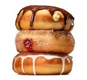

They do make you fat, but hey any sweet does!
Time to dig in!
Ingredients
- 1 cups milk
- 2 teaspoons (one package) active dry yeast.
- 8 tablespoons (1 stick) butter, melted and cooled.
- 2 quarts neutral oil, for frying, plus more for the bowl
- 1 teaspoon salt.
Steps
- Heat the milk until it is warm but not hot, about 90 degrees.
In a large bowl, combine it with the yeast. Stir lightly, and let
sit until the mixture is foamy, about 5 minutes.
- Using an electric mixer or a stand mixer fitted with a dough hook,
beat the eggs, butter, sugar and salt into the yeast mixture. Add half
of the flour (2 cups plus 2 tablespoons), and mix until combined, then
mix in the rest of the flour until the dough pulls away from the sides
of the bowl. Add more flour, about 2 tablespoons at a time, if the dough
is too wet. If you’re using an electric mixer, the dough will probably
become too thick to beat; when it does, transfer it to a floured surface,
and gently knead it until smooth. Grease a large bowl with a little oil.
Transfer the dough to the bowl, and cover. Let rise at room temperature
until it doubles in size, about 1 hour.
- Turn the dough out onto a well-floured surface, and roll it to 1/2-inch
thickness. Cut out the doughnuts with a doughnut cutter, concentric cookie
cutters or a drinking glass and a shot glass (the larger one should be
about 3 inches in diameter), flouring the cutters as you go. Reserve the
doughnut holes. If you’re making filled doughnuts, don’t cut out the middle.
Knead any scraps together, being careful not to overwork, and let rest for
a few minutes before repeating the process.